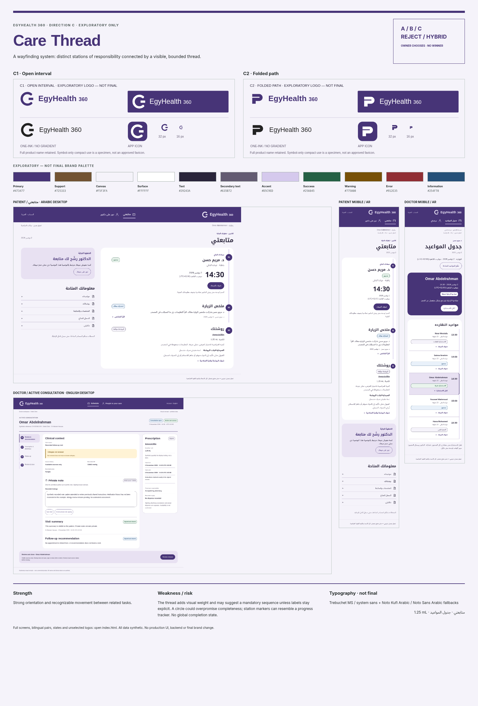

FOUNDATION REBOOT V2 / FIRST VISUAL EXPLORATION
Three directions.
One understandable care story.
Ahmed, inspect all three systems and all six logo concepts before choosing. These are isolated visual studies using synthetic data, not a connected product or a final Design System.
PRODUCT OWNER DECISION REQUIRED: A / B / C / REJECT / HYBRIDNo default selection. No logo, palette or font is final. A hybrid must be rendered coherently later for approval.
DIRECTION A
Care Journal

An attentive editorial journal: a clear next responsibility, followed by source-labelled pages of care.
Inspect A · all screens and logosStrength: Calm reading and a clear distinction between the next action and source retrieval.
Weakness: Long Arabic passages increase scrolling; the paper metaphor could feel less immediately digital.
DIRECTION B
Clear Instrument

A precise clinical instrument: aligned information planes and visible responsibility at each handoff.
Inspect B · all screens and logosStrength: Fast scanning of states and exact targets; dense consultation context remains visible.
Weakness: Lower warmth; the persistent structure can feel technical, especially on first use.
DIRECTION C
Care Thread

A wayfinding system: distinct stations of responsibility connected by a visible, bounded thread.
Inspect C · all screens and logosStrength: Strong orientation and recognizable movement between related tasks.
Weakness: The thread adds visual weight and may suggest a mandatory sequence unless labels stay explicit.
How to inspect
- Open A, B and C. Each has a concept sheet, two logos, swatches and actual type specimens.
- Compare the seven Arabic/English screen pairs at full size. Mobile views are real 390px reflows.
- Review weaknesses, logo risks, source states and consequences.
- Record A / B / C / REJECT / HYBRID. Selection remains separate from final-brand approval.